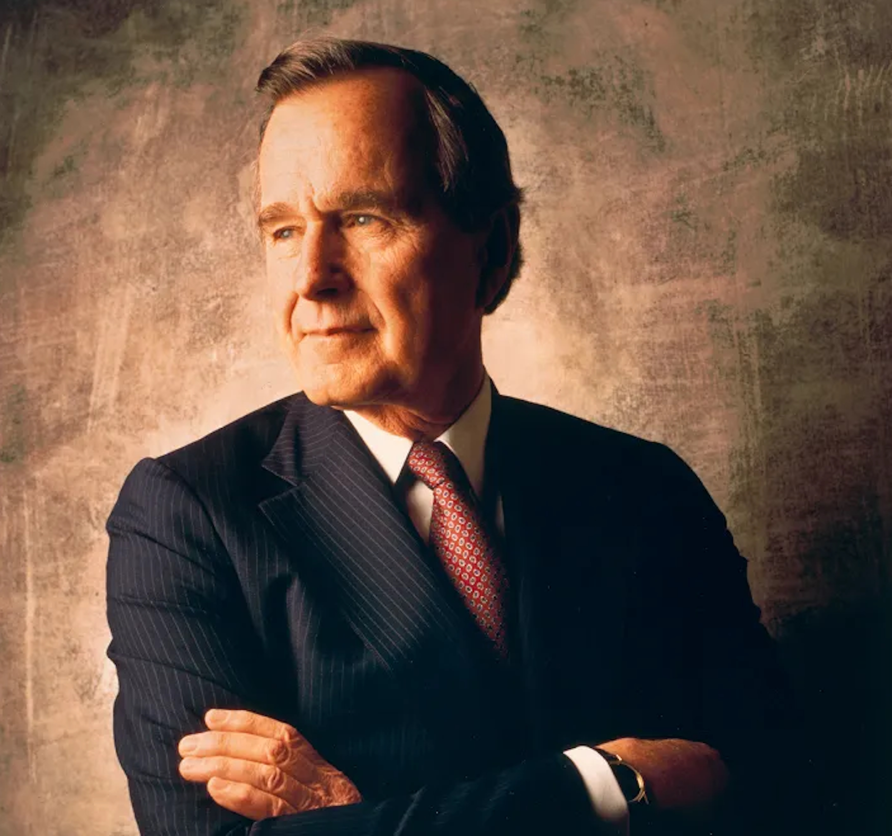

A national forum bringing together key cancer leaders from government, business, academia, and the nonprofit sector.

In 2001, the late President George H.W. Bush, the forty-first President of the United States, asked Robert A. Ingram, then the CEO of GlaxoWellcome, to convene and chair the CEO Roundtable on Cancer, a national forum bringing together key cancer leaders from government, business, academia and nonprofit sectors, all of whom shared a common vision: eliminating cancer.
Dr. Sean Khozin is a physician-executive, board-certified oncologist, and data scientist. He currently serves as the Chief Executive Officer of the CEO Roundtable on Cancer and Project Data Sphere. Previously, he was the Global Head of Data Strategy at Johnson & Johnson and a founding member of the US FDA’s Oncology Center of Excellence. With over 15 years of experience, Dr. Khozin focuses on advancing innovations at the intersection of biology, technology, and artificial intelligence.
Dr. Jon McDunn is the President of Project Data Sphere, overseeing initiatives focused on open-access data sharing and oncology research. He serves as the scientific and technical lead for strategic alliances, scouting collaborative opportunities with new partners. Previously, he was the Executive Director of the External Control Arm Program and Business Development. Before joining Project Data Sphere in 2020, Dr. McDunn built Clinical Sensors, a startup company where he secured $4M in NIH funding.
The Life Sciences Council (LSC) is a strategic advisory body of the CEO Roundtable on Cancer, bringing together senior leaders from pharma, academia, and the life sciences investment community to accelerate precompetitive collaboration in oncology research and therapeutic development.
Established in 2005, the Council has driven some of the Roundtable’s most consequential initiatives, including the creation of the START Clauses (standardized clinical trial agreement terms co-developed with the National Cancer Institute), harmonized safety reporting frameworks, and structured precompetitive research models. The Council also played a catalytic role in the 2014 launch of Project Data Sphere, now an independent 501(c)(3) subsidiary of the CEO Roundtable on Cancer operating open-access and closed-access oncology data programs.
Today, the LSC continues to guide strategic direction across the Roundtable’s research portfolio, including autoRECIST, Total Tumor Burden Index (TTBI), and the Immune-Related Adverse Events (irAEs) Initiative.
Join the coalition of leaders committed to making real progress against cancer. There are many ways to contribute.